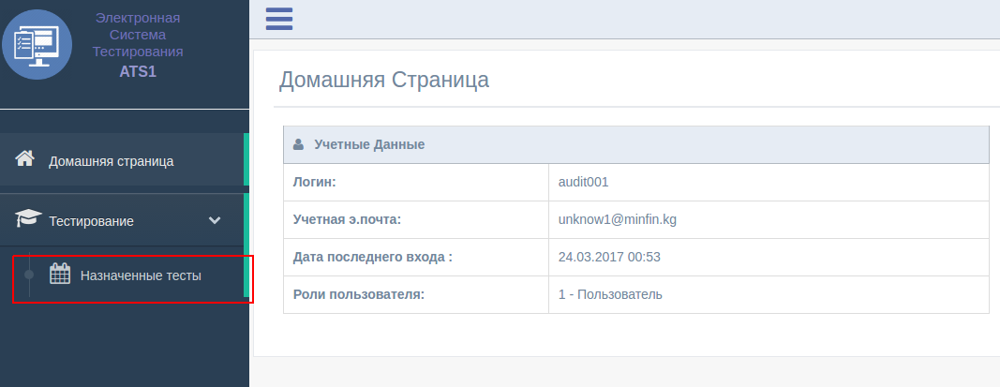
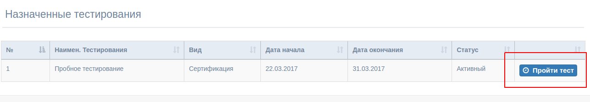
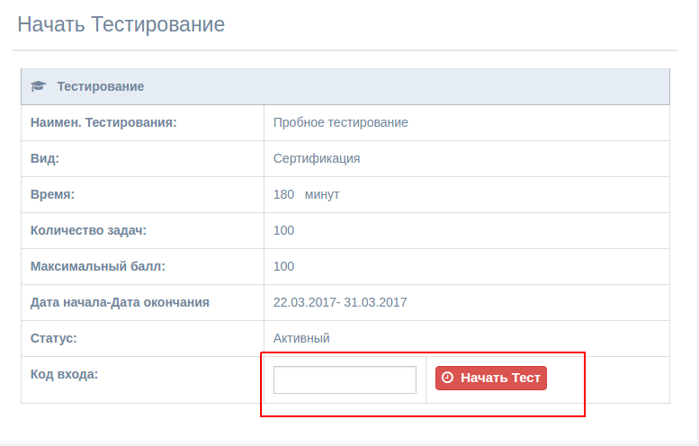
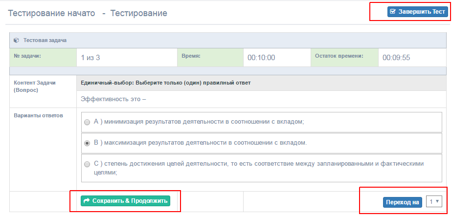

При авторизации пользователя , система автоматически выводит
интерфейс по Ролям пользователей. Для участника тестирования с
разрешением только "Тестирование" , интерфейс только с
"Назначенными Тестированиями".
1. Прохождения Тестирования
Пройдите по нижеуказанной ссылке (Меню --> Тестирование ->
Назначенные Тестирования):

Данная ссылка выводит только те тестирования которые были назначены
пользователю. (Указывается при создании тестирования, добавление
участников)
Участник выбирает тестирование (если назначено более одного теста) и
переходит в следующий раздел авторизации.
----------------------------------------------------------

-------------------------------------------------------
Участник вводит выданный "Код входа" и начинает
тестирование
----------------------------------------------------------

-------------------------------------------------------
Участник выбирает ответ и нажимает на "Сохранить и
Продолжить" , система автоматичести переходит на следующий вопрос. Также
участник может сделать переход на любой вопрос для просмотра пред.
ответов. При окончании теста нажимается на "Завершить Тест" и тест
завершается, выводит результат тестирования..
